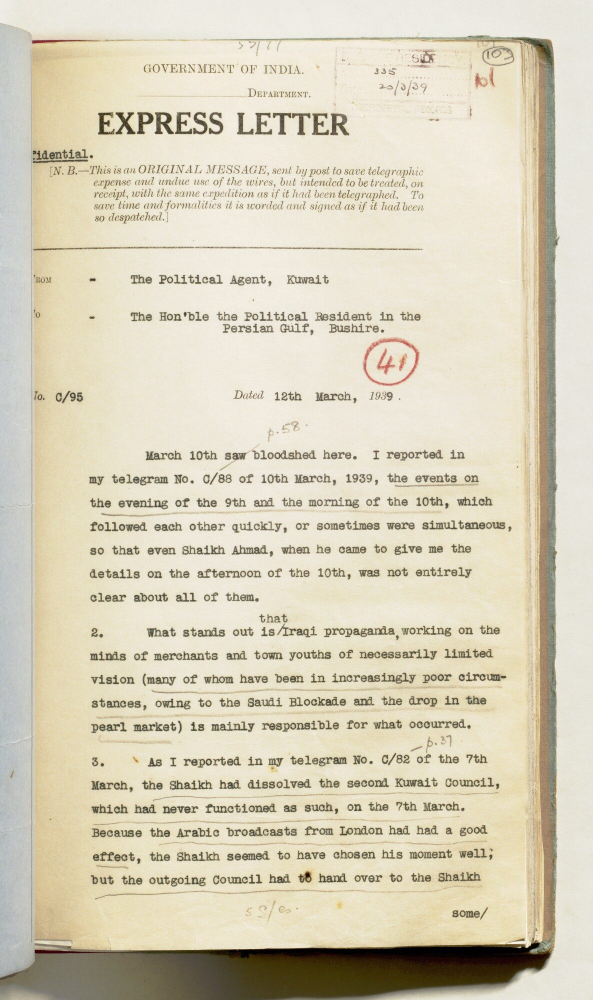
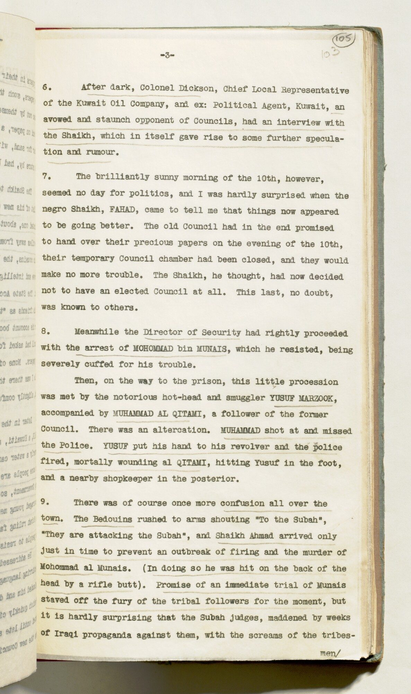
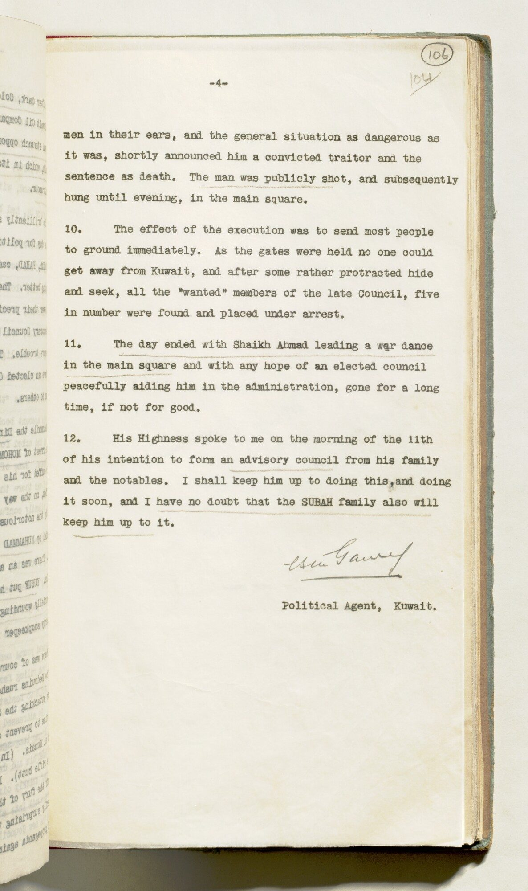

١٠ إلى ١٢ مارس ١٩٣٩ · الرسالة العاجلة رقم C/95 الموقعة من الوكيل السياسي في ١٢ مارس ١٩٣٩ إلى المقيم السياسي في بوشهر، وتقرير عن إذاعة بغداد
السجلات البريطانية عن إطلاق النار على محمد القطامي في مارس ١٩٣٩
ما هي
الصفحة الأولى من تقرير بريطاني عن الأيام التي تلت حل المجلس المنتخب. ويذكر أن الشرطة صباح ١٠ مارس ١٩٣٩ كانت تقتاد محمد بن منيس إلى السجن فالتقت بيوسف مرزوق و«محمد القطامي، أحد أنصار المجلس السابق». ويزعم التقرير أن محمدا أطلق النار أولا فأخطأ، وأن الشرطة ردت فأصابته إصابة قاتلة، وأصابت يوسف في قدمه وصاحب دكان قريب. وكتب قارئ بريطاني بالحبر الأحمر في الهامش: «يبدو أن إطلاق النار كان عشوائيا بعض الشيء!». والصفحة الثانية تقرير مترجم عن إذاعة بغداد التي قرأت برقيات من الكويت: «أُعدم محمد المنيس، وأُطلق النار على محمد بن قطامي، وجُرح كثيرون، وسُجن أعضاء المجلس».
أهميتها
هذه أوراق كُتبت في أيام مقتله نفسها، تذكر اسمه واليوم الذي أُطلق عليه النار فيه، وتُظهر سرعة وصول الخبر إلى بغداد.
من المقصود
محمد عبدالعزيز القطامي، ابن عبدالعزيز بن عبدالوهاب، الذي قُتل في أزمة المجلس في مارس ١٩٣٩. ولا يرد اسمه بين ورثة أبيه، وهذا يوافق وفاته قبل أبيه.
صور الصفحات






النص الأصلي
ملاحظات
هذه روايات الموظفين البريطانيين وهي منحازة إلى جانب الحاكم، فالقول بأن محمدا أطلق النار أولا روايتهم وليست حقيقة ثابتة. ويحمل تقرير الإذاعة عنوان ١١ فبراير ١٩٣٩، لكنه يصف أحداث ١٠ مارس وفي هامشه تاريخ ١٢/٣، فيبدو تاريخ العنوان خطأ في الطباعة.
أسماء أخرى
المصادر
سجلات مكتب الهند، المكتبة البريطانية، رقمنتها مكتبة قطر الرقمية. ونسخة محفوظة في درايف العائلة.
مرجع الأرشيف
- British Library, IOR/R/15/1/549, folios 103 to 106 · Express Letter C/95, 12 March 1939
- Qatar Digital Library · British report on the March 1939 events, page 3
- Qatar Digital Library · Report on Broadcast from Qasr-az-Zihour, Baghdad
كيف كُتب هذا النص: نسخه Claude من الصور. الترجمة العربية من Claude، يرجى مراجعتها.
افتح في الموقع التفاعلي